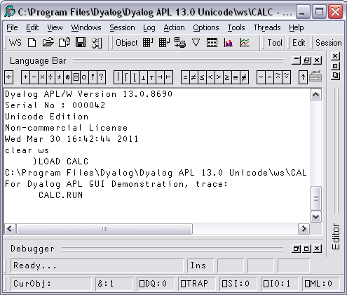
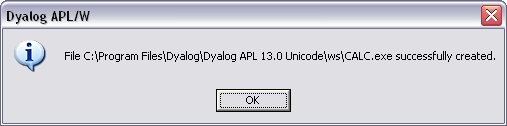
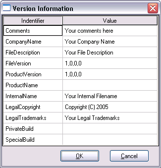

Dyalog APL provides the facility to package an APL workspace as a Windows executable (EXE). This may be done by selecting Export … from the File menu of the APL Session window.
The system provides the following options:
You can package the workspace as a stand-alone executable or as a .EXE file that must be accompanied by the Dyalog APL Dynamic Link Library (dyalog132.dll or dyalog132rt.dll), in which case the DLL should be installed in the same directory (as the EXE) or in the Windows System directory.
The following example illustrates how you can package the supplied workspace calc.dws as an executable. Before making the executable, it is essential to set up the latent expression to run the program using ⎕LX as shown. Notice that in this case it is not necessary to execute ⎕OFF; the calc.exe program will terminate normally when the user closes the calculator window and the system returns to Session input.

Then, when you select Export… from the File menu, the following dialog box is displayed.
In the example shown, the program is to be saved in ws, the (supplied workspaces) directory from which the workspace was loaded (the default).
The Save as Type option has been set to Standalone Executable (includes interpreter exe) which means that a single .EXE will be created containing the Dyalog APL executable and the CALC workspace.
The Runtime application checkbox is checked, indicating that calc.exe is to incorporate the runtime version of Dyalog APL..
As this is a GUI application, the Console application checkbox is left unset.
The Enable Native Look and Feel checkbox has been set so that calc.exe will honour Native Look and Feel if it is enabled at the Windows level.
Note that if you enter the name of a file containing an icon (use the Browse button to browse for it) that icon will be bound with your executable and be used instead of the standard Dyalog APL icon.
The Command Line box allows you to enter parameters and values that are to be passed to your executable when it is invoked.
On clicking Save, the following message box is displayed to confirm success.

You may embed version information into your .exe by clicking the Version button and then completing the Version Informationn dialog box that is illustrated below.
